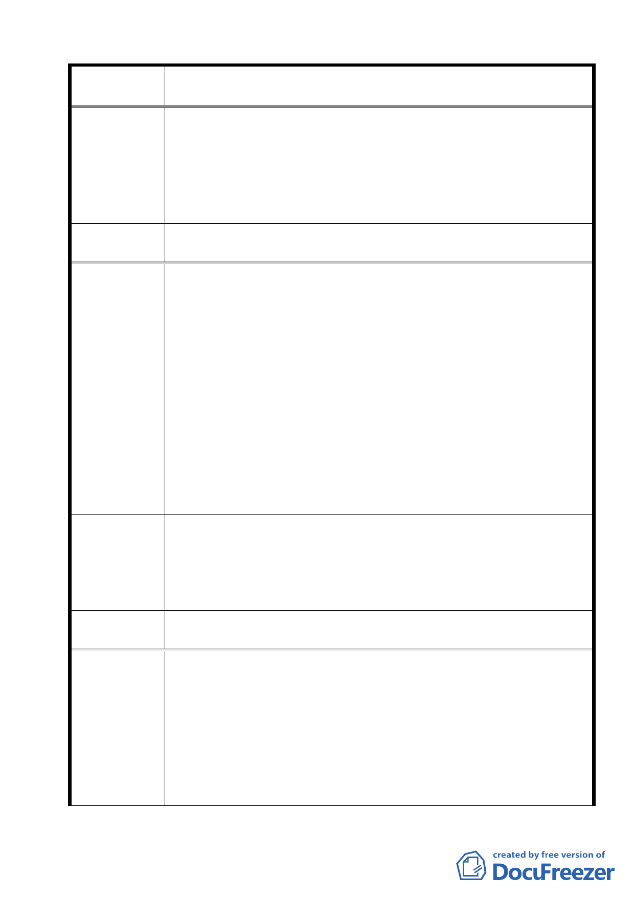

案名
委員會議
決議
陳情理由三
建議辦法
委員會議
決議
陳情理由四
變更臺北市士林區陽明山山仔后地區第二種住宅區為特定住宅區
細部計畫案
更詳盡的分析調查，補充擬定未列明的款項。
2.計畫書第 23 頁建議現樹木銀行應重現原停機坪空間。實際上，
部分的停機坪已變成污水處理區，聽說由環保局管理，環保局
有沒有經過正常行政程序，將此區改為污水處理區?為何在山仔
后，鄰近陽明山國家公園的樞紐地區，這小山城的城中心設立，
請委員詳查。
同編號 2 決議內容。
都市計畫法第 15 條 :市鎮計畫應先擬定主要計畫書，並視其實際
情形，就左列事項分別表明之：
第 5 款：名勝、古蹟及具有紀念性或藝術價值應予保存之建築。
依上述都市計畫法的規定，「主要計畫」應先擬定，作為擬定「細
部計畫」之準則。台北市府府都規字第 09631608900 號公展之「變
更台北市士林區陽明山山仔后地區第二種住宅區為特定住宅區細
部計畫案」應補作「主要計畫」，以附合都市計畫法之程序規定。
文化局去年決定區內保存 22 棟為歷史建物，5/7/2007 山仔后文
史工作室等重新申請全區聚落與文化景觀雙重登錄，至今未定
案。此區「主要計畫」並無明定美軍社區為歷史保留區，此時僅
提出細部計畫，將來土地所有權人可依都市計畫法第 24 條逕向都
發局提變更細部計畫，這個細部計畫所強調的歷史保護精神將無
法實現。
此區的主要計畫案是在民國 73 年修定的，這次的細部計畫將其中
最需保存的歷史區（美軍社區），變為住商混用區，範圍有 15 公
頃之大，對山仔后地區的衝擊力不容忽視，應如參與說明會都發
局科長所言：「要詳擬都市計畫的一個主軸」，重新檢討山仔后區
的主要計畫。
同編號 2 決議內容。
1.發展局局長許志堅表示，本次計畫內容主要係從地區整體容受
力及維護歷史與自然景觀觀點進行檢討，特別重視公共性的提
昇與增進社會利益，透過重新檢討調整該地區計畫容積率與建
蔽率，並配合都市設計準則的擬訂，保存該地區特殊歷史與人
文景觀，並建構山仔后成為生態社區，同時考量地區文教與服
務機能需求，配合調整放寬部分土地使用項目，以提昇公共性
使用暨活絡地區發展。」（都發局網站新聞稿）
（1）「細部計畫案」並沒有明定那一些區域或房舍應為公共用途，
22